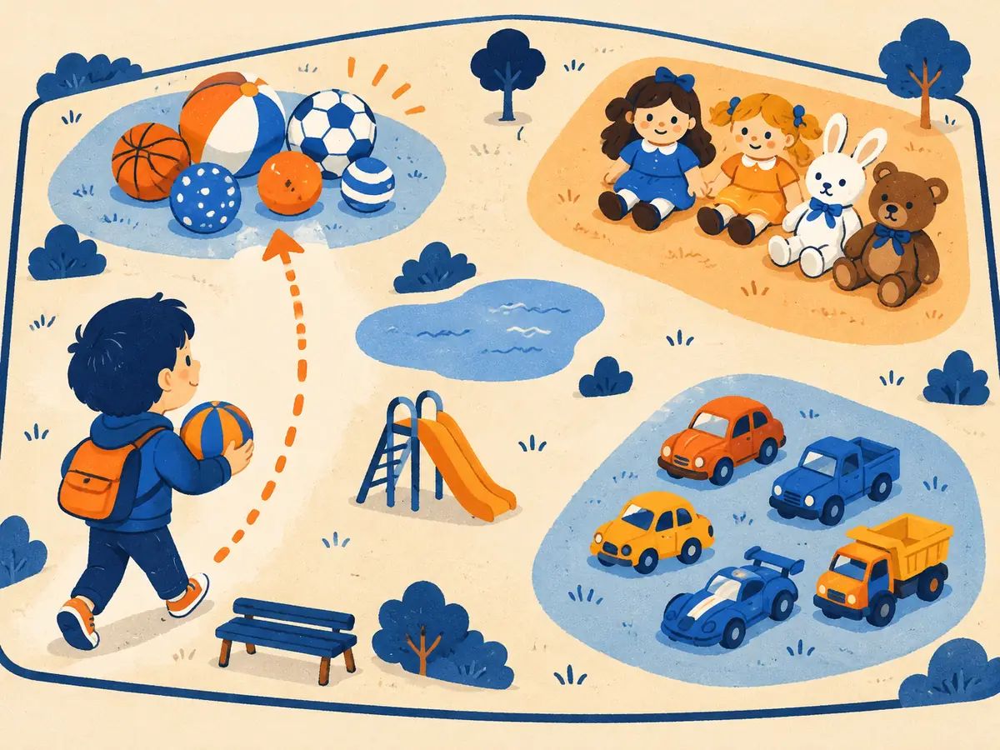

Embeddings & vector search
Keyword search can't tell that “get my money back” and “refund policy” mean the same thing. Embedding models can: they turn each text into a vector, and texts that mean similar things get vectors that point in similar directions. This lesson shows how that works, and how databases search millions of such vectors in milliseconds.
By the end you can
- Explain what an embedding model is, how it is trained, and compute cosine similarity to rank results.
- Choose a chunking strategy, and explain how HNSW, IVF and product quantization trade recall for speed.
- Combine keyword (BM25) and vector search with reciprocal rank fusion, and say when to add a reranker.
Take your best guess. A wrong guess now makes the right answer stick later.
A help centre has an article titled “Refund policy”. A user searches “get my money back” and a keyword search returns nothing. Why?
- The search index is broken
- The article is too long
- Keyword search matches words, and the query and the article share none
- Keyword search only works in English
A vector database holds 100 million vectors and answers a query in a few milliseconds. How?
- It compares the query with all 100 million vectors on a very fast chip
- It uses an index that checks only a small fraction of the vectors and accepts that it may occasionally miss the very best match
- It caches the answer to every possible query in advance
- It searches only the 1,000 newest vectors
From keywords to meaning: what an embedding model does
For decades, search meant matching words. The best-known scoring rule, BM25, came out of the Okapi system at City University London (Robertson et al., TREC-3, 1994) and still powers most search boxes. It is fast and precise, but it is blind to synonyms: “parcel” never matches “package”.
Word vectors such as word2vec (2013) showed that meaning could live in geometry. But a sentence needs one vector, not one per word. In 2019, comparing sentences with BERT meant feeding every pair through the model together, and Reimers & Gurevych calculated that finding the most similar pair among 10,000 sentences that way would take about 65 hours. Their Sentence-BERT (2019) instead encodes each sentence once into a fixed vector, so the same search takes about 5 seconds: just compare vectors.
That is an embedding model: text in, one vector out (typically a few hundred to a few thousand numbers). Unlike the token embedding table inside an LLM (P3.4), it reads the whole passage with a transformer and pools the result into a single vector.
How it learns. Most modern embedding models are trained contrastively on huge numbers of matching pairs: a question and the passage that answers it, a title and its article, two paraphrases. For each pair in a batch, the loss pushes the two vectors together and pushes the query away from all the other passages in the batch (the “in-batch negatives”; Karpukhin et al., 2020, used this for the DPR retriever). After training, “get my money back” lands near “refund policy” because questions like it were paired with passages like that.
Two practical rules follow. Use the same model for your documents and your queries; vectors from different models live in different spaces and can't be compared. And follow the model's instructions: some expect a prefix such as query: or a task description before the text.
Explain like I'm 5

Imagine a big playground where every toy has its own spot, and similar toys sit together: all the balls in one corner, the teddy bears in another, the toy cars by the gate.
A child arrives with a new ball. She doesn't check every toy one by one. She walks straight to the ball corner, and the toys there are its neighbours.
An embedding model gives every text its spot on the map, and search is walking to the right corner.
Where it breaks: the real map has hundreds of directions, not two, and “similar” means whatever the model learned from its training pairs, which may not match what your users mean.
You embedded 50,000 documents with model A. Can you search them with queries embedded by a newer model B?
- No: vectors from different models live in different spaces, so you must re-embed the documents with B
- Yes, as long as both vectors have the same length
- Yes, if you normalize both vectors first
- Only for English queries
Cosine similarity and the top-k
To search, embed the query, then rank documents by how closely their vectors point the same way, using the cosine similarity from P3.4:
$$\cos(q, d) = \frac{q \cdot d}{\lVert q \rVert\,\lVert d \rVert}$$$q$ is the query vector, $d$ a document vector, $q \cdot d$ their dot product and $\lVert q \rVert$ the length of $q$. It ranges from $-1$ to $1$; higher means more similar. The $k$ best documents are the top-k. A common shortcut: normalize every vector to length 1 when you store it, and cosine becomes a plain dot product, which is what most vector databases compute fastest.
Worked example
Toy 3-d embeddings. Query $q = (1, 2, 2)$, with length $\sqrt{1+4+4} = 3$. Three documents: $A = (2, 1, 2)$, $B = (0, 3, 4)$ and $C = (4, 0, 3)$.
- $\cos(q, A) = \dfrac{2 + 2 + 4}{3 \times 3} = \dfrac{8}{9} \approx 0.89$
- $\cos(q, B) = \dfrac{0 + 6 + 8}{3 \times 5} = \dfrac{14}{15} \approx 0.93$
- $\cos(q, C) = \dfrac{4 + 0 + 6}{3 \times 5} = \dfrac{10}{15} \approx 0.67$
- Top-2: $B$, then $A$. $B$ is longer than $A$, but length is divided out; only direction counts.
Same query $q = (1, 2, 2)$. Two more documents: $D = (0, 0, 3)$ and $E = (2, -1, 2)$. Round to two decimals.
- $\cos(q, D) =$
- $\cos(q, E) =$
- The best score among $A$ to $E$:
Now try it on a small help centre. The ranking uses cosine similarity; the keyword switch adds BM25 matching, which you'll meet properly two sections down.
Playground: search 20 help-centre snippets
Toy embeddings: 6 hand-made topic directions plus hashed words, so only about 80 words carry meaning. The map is a 2-D sketch of the clusters; the ranking uses the full vectors. Pick a query or type your own.
Try error E1042 with keywords off: the meaning search returns app problems, because “error” sounds like a crash and the code itself carries no meaning for the model. Switch keywords on and the exact match jumps to the top (shown in orange when keywords alone brought it into the top-k).
All your stored vectors are normalized to length 1. Which is then the same as their cosine similarity with a unit-length query?
- Their Euclidean distance
- The number of shared words
- Their length
- Their dot product with the query
Chunking: what goes into each vector
An embedding squeezes a whole passage into one vector, so a 40-page manual as a single vector would blur everything together, and many models can only read a limited number of tokens anyway. So documents are split into chunks, and each chunk gets its own vector. Chunking choices often matter as much as the choice of model.
- Fixed size: every 300 to 1,000 tokens, say. Simple and predictable, but it can cut a sentence or a table in half.
- Overlap: repeat the last 10 to 20% of each chunk at the start of the next, so an idea that straddles a boundary appears whole in at least one chunk.
- Structure-aware: split at headings, paragraphs, list items or code functions. Usually the best default for documents that have structure.
- Add context: a chunk saying “It rose 3% last quarter” is useless alone. Prepend the document title and section heading, or a one-sentence summary of where the chunk sits. Anthropic reported in September 2024 (“Contextual Retrieval”) that adding a short generated context to each chunk cut failed retrievals by 49% on its test sets, and by 67% together with reranking.
Smaller chunks give sharper matches but less context per hit; larger chunks carry more context but blur the vector. Store metadata with every chunk (source, title, date, access rights) so you can filter and cite later.
Worked example
A 2,000-token document, chunks of 500 tokens with 100 tokens of overlap.
- Each new chunk starts $500 - 100 = 400$ tokens after the last (the stride).
- Chunks start at 0, 400, 800, 1,200 and 1,600; the last one runs to the end. Number of chunks $= \lceil (2000 - 100) / 400 \rceil = \lceil 4.75 \rceil = 5$.
- Storage: one million such chunks with 1,024-dimensional float32 vectors take $10^6 \times 1024 \times 4$ bytes $\approx 4.1$ GB, before any index overhead.
A 10,000-token report, chunks of 800 tokens with 200 tokens of overlap.
- Stride: tokens
- Number of chunks:
- 200,000 chunks with 768-dimensional float32 vectors, in MB (1 MB = $10^6$ bytes):
Users ask about one clause in long contracts, but retrieval keeps returning chunks that mention the topic without the actual clause. Which change is most likely to help?
- Make chunks much larger, so each contract is one vector
- Remove the overlap between chunks
- Split at clause and heading boundaries, and prepend the contract title and section heading to each chunk
- Use fewer dimensions per vector
Approximate nearest neighbours: HNSW, IVF and PQ
Exact search compares the query with every vector. With 10 million 768-dimensional vectors that is $10^7 \times 768 \approx 7.7$ billion multiply-adds per query. Fine for a few thousand vectors (just use a matrix multiply), far too slow for a busy service. Approximate nearest-neighbour (ANN) indexes look at a small, well-chosen fraction instead.
- HNSW (Hierarchical Navigable Small World; Malkov & Yashunin, arXiv 2016, journal version 2018) is a layered graph, as in the animation. It is fast and accurate and the default in many vector databases, but the graph lives in memory and adds to the size of the vectors.
- IVF (inverted file) clusters the vectors with k-means into, say, 4,096 lists. A query is compared with the 4,096 cluster centres, then only the vectors in the nearest few lists are scanned. Probing 16 lists scans about $16 / 4096 \approx 0.4\%$ of the data (if lists are similar in size). More lists probed means higher recall and slower queries.
- Product quantization (PQ) (Jégou, Douze & Schmid, 2011) compresses the vectors themselves. Split a 768-d vector into 96 pieces of 8 numbers and replace each piece with the 1-byte ID of its nearest “typical piece” from a learned codebook. 3,072 bytes of float32 become 96 bytes, 32 times smaller, at some cost in accuracy. IVF and PQ are often combined, as in the FAISS library.
The trade-off. ANN quality is measured as recall@k: of the true top-k (from exact search), what fraction did the index return? Every index has knobs (efSearch for HNSW, the number of probed lists for IVF) that buy recall with latency. Measure it on your own queries: compute exact top-10 for a few hundred queries, compare with the index, and tune the knob until recall is good enough, often 0.9 to 0.99, at a speed you can afford.
Your HNSW index returns 9 of the true top-10 neighbours on average. You raise efSearch. What do you expect?
- Lower recall, faster queries
- Higher recall, slower queries
- The index needs rebuilding
- No change, since efSearch only affects memory
Hybrid search and reranking
Vector search is strong on meaning and weak on exact strings: product codes, error numbers, names, rare jargon. Keyword search is the opposite. Hybrid search runs both and merges the results.
BM25 in words: a document scores higher when it contains the query's words, more so for rare words (like “E1042”) than common ones, with diminishing returns for repeats and a correction so long documents don't win just by being long.
The two scores aren't on the same scale, so the simplest robust way to merge is by rank. Reciprocal rank fusion (RRF; Cormack, Clarke & Büttcher, 2009) gives each document
$$\text{RRF}(d) = \sum_{\text{lists}} \frac{1}{k + \text{rank}(d)}$$where $\text{rank}(d)$ is its position in each list (1 = top), the sum runs over the lists it appears in, and $k$ is a constant that softens the advantage of the very top ranks; $k = 60$ is the value from the paper and the usual default.
Worked example
Vector search ranks D3, D1, D7, D2. BM25 ranks D7, D3, D5. With $k = 60$:
- D3: $\frac{1}{61} + \frac{1}{62} = 0.01639 + 0.01613 = 0.03252$
- D7: $\frac{1}{63} + \frac{1}{61} = 0.01587 + 0.01639 = 0.03227$
- D1: $\frac{1}{62} = 0.01613$; D5: $\frac{1}{63} = 0.01587$; D2: $\frac{1}{64} = 0.01563$
- Fused order: D3, D7, D1, D5, D2. Documents both lists like rise to the top.
Vector search ranks A, B, C. BM25 ranks C, A, D. Use $k = 60$ and give scores to four decimals.
- RRF(A) $=$
- RRF(C) $=$
- D's position in the fused list (1 = top):
Reranking. An embedding model encodes query and document separately, which is what makes it fast. A cross-encoder reads the query and one document together and outputs a relevance score, which is more accurate but far too slow to run over a whole collection (Nogueira & Cho, 2019, showed BERT doing this well). So production systems retrieve a few dozen to a hundred candidates with fast hybrid search, rerank them with a cross-encoder (or a small LLM), and keep the best 5 to 10.
Choosing a model. Public benchmarks such as MTEB (Massive Text Embedding Benchmark; Muennighoff et al., 2022) and BEIR (Thakur et al., 2021) compare embedding models across many tasks and languages. Use them to shortlist, then test the shortlist on a few hundred of your queries with known good answers. Your documents and your users' phrasing matter more than a leaderboard rank.
Why don't systems run the cross-encoder reranker over every document?
- It must read the query and each document together, so the cost grows with every document; vectors can be precomputed once
- Cross-encoders can only read one sentence
- It would always return the same documents as BM25
- Rerankers don't work with hybrid search
A colleague asks why your search pipeline has both a vector index and BM25, plus a reranker. Explain what each part contributes.
Connect to P3.4: how does a sentence embedding model differ from an LLM's token embedding table?
- They are the same thing: the table row for the first token
- The table gives one fixed vector per token; an embedding model reads the whole passage with a transformer and outputs one vector for all of it, trained so similar passages land close
- The embedding model has no parameters
- The table is trained contrastively; embedding models are not trained
Users search a parts catalogue by part numbers such as “XR-2290B”. Vector search alone often misses. Best fix?
- A bigger embedding model
- Larger chunks
- A higher efSearch
- Add BM25 keyword search and fuse the rankings (hybrid search)
Product quantization stores a 768-dimensional float32 vector as 96 one-byte codes. By what factor does that shrink it?
- 8×
- 4×
- 32×
- 768×
An index returns 8 of the true top-10 neighbours for a query. What is its recall@10 for that query?
- 0.8
- 0.08
- 0.2
- 8
Key takeaways
- An embedding model maps a passage to one vector; contrastive training on matching pairs puts similar meanings close together.
- Rank by cosine similarity; with unit-length vectors it's a dot product. Use the same model for documents and queries.
- Chunking (size, overlap, structure, added context) shapes what can be found at all.
- ANN indexes (HNSW, IVF, PQ) check a fraction of the vectors; tune their knobs for recall@k against latency.
- Hybrid search (BM25 + vectors, merged with RRF) plus a cross-encoder reranker is the robust default.
About 20 minutes, NumPy only, nothing to download: build a tiny embedding, write cosine top-k, a mini BM25 and reciprocal rank fusion, and measure an approximate index's recall@k against brute force.
Adding cards schedules your first spaced review.